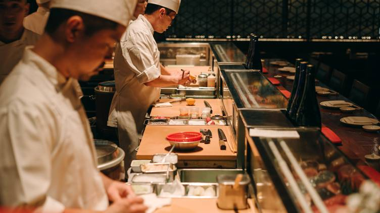

"Una verdadera pasión por el Sushi"
APERTURA DE FRANQUICIAS
Nuestra red de franquicias constituyen el núcleo de formación de la imagen de marca a través de las experiencias vividas en cada pedido. Nacida y elaborada frente al mar, Nobu sushi es la patente entre la fusion de la comida occidental y la oriental. Es un honor que la cocina de Nobu pueda encontrarse en todos los rincones del mundo y que cualquiera sepa cómo como comerlo. Se ha hecho popular y la gente sabe apreciarlo porque es la combinación perfecta: pescado fresco y arroz, un bocado pequeño, como las tapas, pero en versión japonesa. Desde que se convirtió en un éxito inmediatamente; comer excelente sushi con la mejor atencion hicieron que se convierta en una experiencia en si misma. Hoy con solo 3 sucursales, Nobu empieza a marcar el camino en este nuevo país, con muchas ganas de crecer y poder infusionar los distintos sabores tanto de Argentina como de Japon.
Visión
"Ser el pedidos de sushi mas emblematico de la ciudad"
Misión
"Enriquecer la experiencia de comer sushi, compartiendo el sabor y contagiando la pasión por el sushi"

Nuestra red de franquicias constituyen el nucleo de formación de la imagen de marca a traves de las experiencias locales
Nuestros Valores
-
Calidad
"Nos gusta hacer bien las cosas. Buscando la excelencia en todo lo que hacemos" -
Hospitalidad
"Somos serviciales con clientes, compañeros de trabajo, proveedores, y todos aquellos con los que nos relacionamos." -
Espiritu Emprendedor
"Tratamos de innovar y ademas del sushi clasico buscar la fusion con los sabores regionales. Asumimos riesgos y nos animamos a hacer las cosas de una manera diferente, nueva, entretenida" -
Disfrute
"Disfrutamos lo que hacemos y nos divertimos." -
Responsabilidad
"Somos responsables de nuestras decisiones y relaciones con colaboradores, clientes, proveedores y comunidad local, buscando minimizar el impacto en el medio ambiente"
Nuestra gastronomia
Uno de los principales protagonistas en cada uno de nuestros locales es la propuesta gastronómica que le brindamos a nuestros clientes. Es allí donde podrán observar en nuestras diferentes cartas la apertura que tenemos a la Gastronomía Local, la Experiencia del sushi y actualización permanentemente con las últimas tendencias gastronómicas (Street Food Local y Finger Food).
NUESTRAS SUCURSALES
Las Cañitas
4710-5373
11-2245-5625
Arce 2866
San Telmo
4841-8536
11-2790-5878
Tacuari 3500
Recoleta
4853-0058
11-6719-3829
Juncal 3654
Abiertas de lunes a Sabados de 10 am a 23 pm
Copyright © 2023 NOBU TOKYO | Desarrollado by Alejo Vilches.